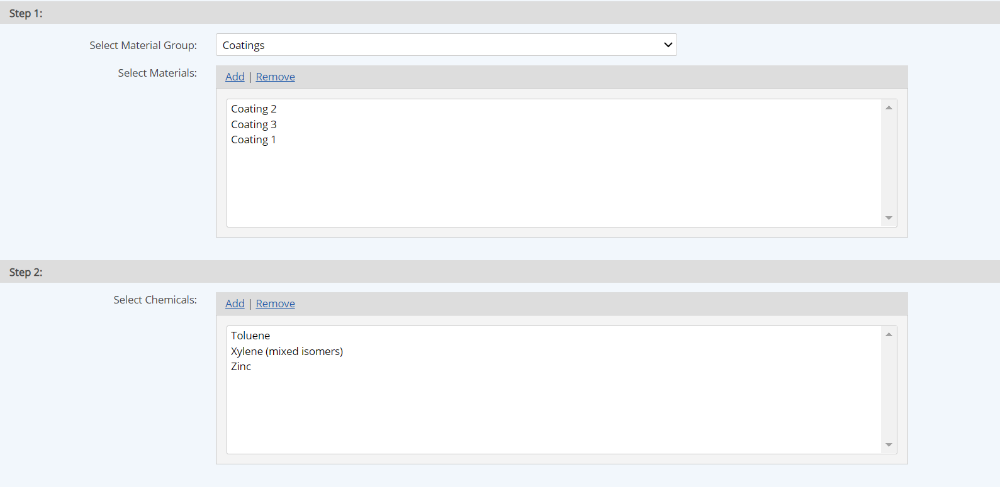
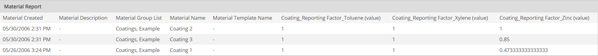

A Material Report is used to report on the properties of Materials used in the system.
A Material Report may include
To create and run a Material Report, users must have the following user rights and permissions:
To create a Material Report:
Select the Chemicals to include. Chemicals are filtered by the Materials selected.

Select the properties to include in the report.
Calculated values for material value-based properties and primary formula-based properties may be included. For secondary and tertiary FBPs only the definitions may be included as the values are calculated based on use and data input.
